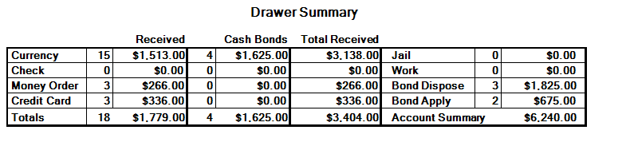
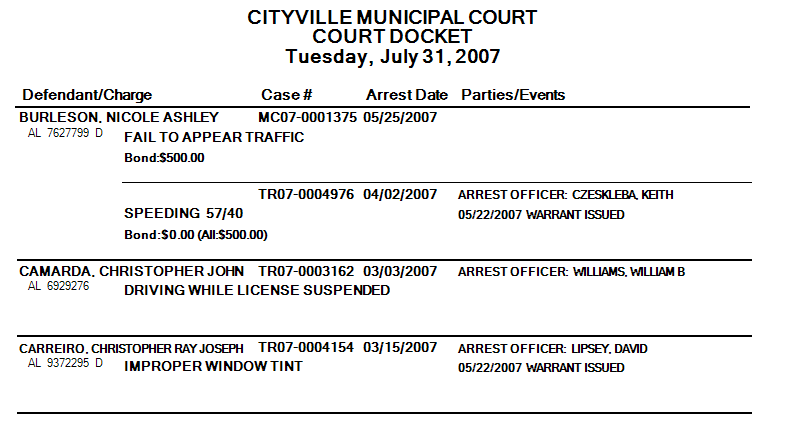
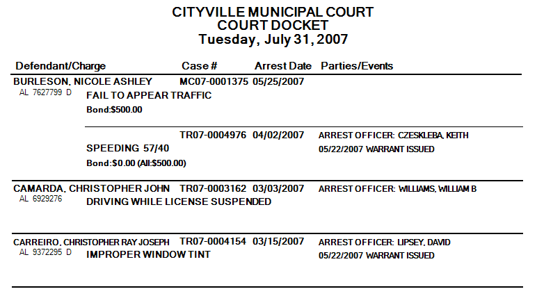
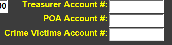
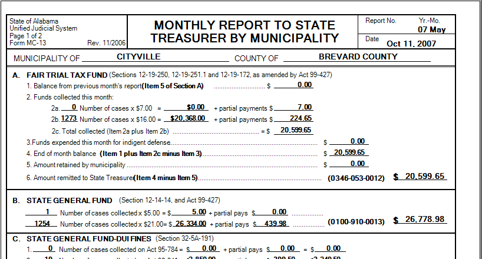
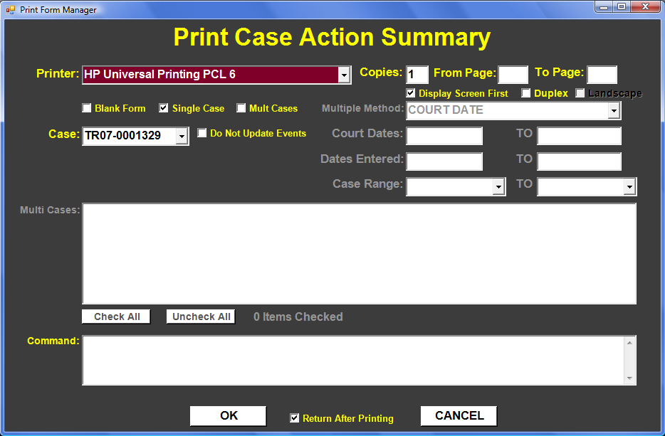
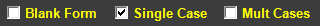
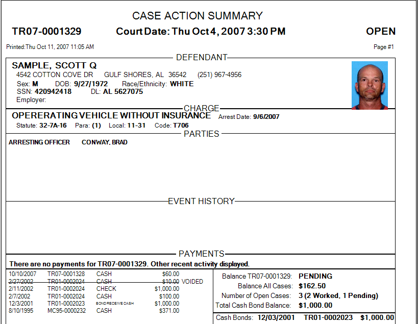

Printing
Print Menu
The PRINT Menu allows you to select a Form or a Report to Print. Clicking on PRINT will reveal a Sub-Menu with various Print Categories which will in turn reveals another Sub-Menu from which the desired Form or Report may be selected. Clicking (or pressing enter) on a given Menu Item will start the printing process.
A Print Setup Window will then appear with various options relating to that particular Form or Report.

Printing Total Receipts Report

The ‘Total Receipts Report’ prints out monies received and disbursed for a given time period. After selecting the Total Receipts Report from the Print Menu (see ‘Print Menu’ section), the Initial Print Window appears:
The Printer is set to the default printer. You may change this printer to any printer you have installed on your computer. You may also alter the number of copies to print. The ‘From Page:’ and ‘To Page:’ allow you to print only certain pages of this report. If this was a 10 page report you could choose to only print pages 7 through 9 if you wished. This might be helpful for printing reports with lots of pages. You may only want the last page or you may have printer problems after page 80 and not want to have to reprint the whole report.

‘Display Screen First’ allows you to look at the report in a standard Print Viewer. You may then print the report from the viewer by clicking on the printer in the upper left corner.
POST DATESPost Dates will default to the current Post Date and may be changed to be any range needed.
The Initial Print Window defaults to all 4 reports being printed. You may uncheck any report you do not want to print.
‘Total Receipts’ is a row listing of all receipt numbers.
‘Drawer Summary’ is how the collections split out as in Cash, Check, Money Order, Credit Card.
Normal Collections and Cash Bonds are totaled into the Total Received column which should equal the drawer. ‘Bond Apply’ are bonds being applied to cases or being forfeited. Money should be transferred from the bond account and disbursed to the various Costs and Fines accounts. ‘Bond Dispose’ are bonds that are returned or transferred to Circuit Court.

The ‘Account Summary’ report shows where the amounts received or applied should be disbursed.
If these fines and costs have account numbers, the ‘General Ledger’ report will group the disbursements by these account numbers.
BY CASHIER
If ‘Separate by Cashier’ is checked and ‘Cashier Name’ contains a name, the reports will be run for only this cashier. If ‘Separate by Cashier’ is checked and ‘Cashier Name’ is empty, the reports will be run once for each cashier. If ‘Separate by Cashier’ is not checked and ‘Cashier Name’ is empty. All totals are run together without regard to cashier.
COMMAND
The SQL Command at the bottom normally will not be used. It is displayed so that it may be adjusted should the need for a customize report arise.
Court Docket Report
The Initial Print Screen for the Court Docket Report looks like this:

If Landscape is checked, ‘Events’ are in a separate column to the far right. If instead the docket is to be Portrait, ‘Events’ are placed under ‘Parties’
COURT DATE, TIME, and TYPE
A Court Date is required to print the docket. If ‘Time’ is left blank, all open cases with that Court Date will be printed. If ‘Time’ is specified only open cases with that Time will be included. Docket Type is handled the same way. If you don’t specify a ‘Docket Type’ all open cases will be included without regard to what the ‘Docket Type’ is. Thus, you may optionally run dockets based on ‘Type’ for the same Court Date and Time. You may create your own customized ‘Docket Types’.
PRE or POST TRIAL DOCKET
A Docket normally just shows open cases with the current Court Date. If you wish to see the cases that have been closed or continued and the current date is still prior to the actual Court Date, the ‘Pre or Post Trial Disposition’ should be checked. If you want just the closed and continued cases, leave ‘Show All Cases’ blank. If you want all cases regardless of their state, then check ‘Show All Cases’. If the Docket is being run is after the specified Court Date and ‘Pre or Post Trial Disposition’ is checked, then the report is considered a ‘Post Trial Disposition’. All cases scheduled for the specific Court Date will be displayed. (‘Show All Cases’ doesn’t matter at this point.)
DISPLAY OPTIONS
Display Options allow you to chose whether or not certain items will be on the docket. ‘Display Charge Note on Docket’ determines if the ‘Note on Docket’ field from the ‘Charges’ Table is displayed by each case that has this charge. This note may be used as a policy or procedure note such as normal fines and costs for this charge.
OFFICER ORDER
Dockets are normally ordered by ‘Defendant Name’ so that all the defendants cases are together. If instead (or in addition to) you would like the docket to be grouped by Police Officer so all the Police Officer’s cases are together, you should check the ‘Order by Arresting Officer’ box. You may also make each officers docket is on separate pages by checking the ‘Separate Page per Arresting Officer’ box.
CASE EXCLUDED FROM DOCKET
Each case has a check option to be excluded from the docket for whatever reason. Officers may also be excluded from the docket. If these options are check on the cases, they will not appear on the docket if the ‘Recognize…’ options are checked here.
LANDSCAPE DOCKET PORTRAIT DOCKET

OFFICER DOCKET
PORTRAIT DOCKET

OFFICER DOCKET

Printing State Monthly Reports
The ‘State Monthly Reports’ prints the 3 forms required to be submitted
monthly to the state. The ‘State Treasurer Report’, ‘POA Report’, and
‘Crime Victims Report’ all default to being checked. You may uncheck any
of them that you do not wish to run.

The Report Dates default to the previous month if the current date is in the first half of the month. If the current date is later in the month, the Report Dates will default to the current month. Regardless, you may alter the ‘Report Dates’ as needed.
BLANK FORMS
There is an option to print blank forms.
FAIR TRIAL TAXFair Trial Tax Balances for Indigent Defense should be entered for Section A in the report to the Comptroller.
PREPARERName and Telephone number of the preparer should default correctly. If needed they can be altered.
ACCOUNT NUMBERS  If you have account numbers for the 3 reports that you desire to reference, you may place them in the appropriate fields.
Press F9 or Click on OK when you are ready to generate the reports.
 If ‘Return After Printing’ checked focus will return to this Initial Print Screen after completing the printing.
If ‘Return After Printing’ checked focus will return to this Initial Print Screen after completing the printing.
Printing Case Action Summary
The Initial Print Screen for the Case Action Summary looks like this: 
SINGLE CASE Below the standard Printer, Copies, From Page, Display Screen First fields is
You may print a blank Case Action Summary, a single Case Action Summary, or do multiple Case Action Summaries at one time. The default is to print just a single. If you were in the ‘Cases’ Table, the record you were on will be the default. Therefore, if you were just printing a single Case Action Summary all you need to do at this point is press F9 or click OK. No changes would need to be made.
MULTIPLE CASES
If instead you wanted to print all or some of the Case Action Summaries for a given court date, you may check the ‘Mult Cases’ box and the screen will change based on the Court Date of the current case. The ‘Multiple Method’ defaults to ‘COURT DATE’, which uses the ‘Court Date’ fields right below it.
Now the Multiple Method is COURT DATE and all cases for that Court Date are listed in the ‘Multi Cases’ Data Grid. You may now select or deselect any case on that list for which to print a Case Action Summary by checking or unchecking the ‘Include’ box for that Case.

The ‘Check All’ and ‘Uncheck All’ will allow you to either select or deselect all the cases at once. The label to the right shows you how many cases are checked and thus how many ‘Case Action Summaries’ will be printed.

Alternatively, you may fill the
‘Multi Case’ grid with all
cases Entered on particular
date or a given case number
range. You may also specify
only cases that are open.
The appropriate fields below the ‘Multiple Method’ are then used. As these
‘Case Action Summaries’ are printed, the Events data grid for each case is
updated with this fact. If you do not want the Events data grid to be updated
check the ‘Do Not Update Events’:

This interface is used on many other ‘Initial Print Screens’ involving cases.

This interface is used on many other ‘Initial Print Screens’ involving cases.